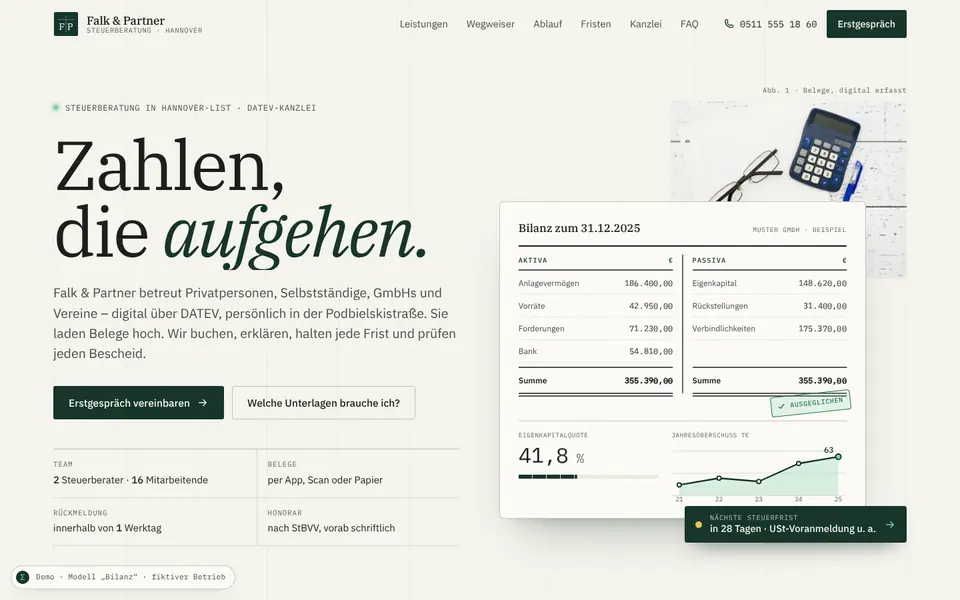
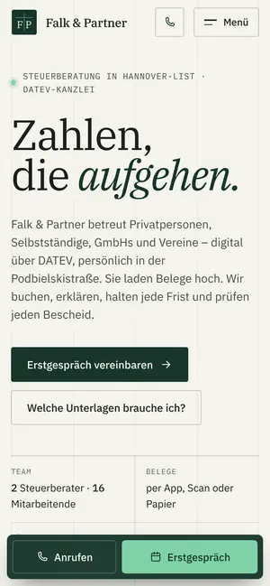

Case Study 25 / 30 · Beratung
Falk & Partner Steuerberatung
Modell „Bilanz“
Steuerkanzlei wie ein Kontenblatt, mit Mandanten-Wegweiser, Unterlagen-Checkliste und Fristenkalender.


Fristen im Kalender sind als Orientierung gekennzeichnet und vor einem echten Einsatz fachlich zu prüfen.
Ausgangslage
Falk & Partner ist eine erfundene Steuerberatungskanzlei in Hannover-List. Mandantinnen und Mandanten kommen mit sehr unterschiedlichen Anliegen – Privatperson, Selbstständige, GmbH oder Verein – und wollen wissen, welche Unterlagen sie brauchen und welche Frist als nächstes ansteht. Die Seite soll diese Fragen klären, bevor jemand anruft, und den digitalen Ablauf der Zusammenarbeit zeigen.
Idee
Das Modell „Bilanz“ ist aufgebaut wie ein Kontenblatt: Spaltenlinien im Hintergrund, tabellarische Zahlen, doppelte Summenstriche. Tannengrün, Papier und Tinte mit sparsamem Mint, Ampelfarben nur für Fristen. IBM Plex Serif, Sans und Mono trennen Überschriften, Text und Zahlen. Im Hero zeichnet sich ein T-Konto, die Beträge rollen wie ein Zählwerk, und die Summen schließen mit einem Stempel „ausgeglichen“ – klar und sachlich, wie es zu einer Kanzlei passt.
Was die Seite kann
- Mandanten-WegweiserTabs für Privat, Selbstständig, GmbH und Verein mit Leistungen, Unterlagen, Fristen und Links zur passenden Checkliste oder zum vorausgefüllten Formular.
- Unterlagen-Checklistevier Listen zum Abhaken mit Fortschrittsbalken, Stempel bei Vollständigkeit, Zurücksetzen und einer Druckansicht nur für die Liste; der Stand bleibt im Browser gespeichert.
- FristenkalenderZeitleiste des laufenden Jahres mit sechs Spuren, Heute-Linie, Ampel nach Resttagen, Filter nach Mandantentyp, Umschalter monatlich/vierteljährlich und Dauerfristverlängerung; Termine werden berechnet und auf den nächsten Werktag verschoben.
- Digitaler AblaufUpload, Prüfung, Erklärung und Bescheid-Check als gepinnte Schrittfolge auf dem Desktop mit animierten Vignetten, auf dem Handy untereinander.
- Hero-BilanzT-Konto-Linien zeichnen sich per SVG, Beträge zählen hoch, dazu Eigenkapitalquote und Sparkline.
- Erreichbarkeits-Status nach Öffnungszeiten, SVG-Standortkarte mit Route und mobile Aktionsleiste für Anruf und Erstgespräch.
Dein Betrieb
So eine Seite für dich?
Schreib mir kurz, was du anbietest und was deine Website leisten soll. Du bekommst eine ehrliche Einschätzung, was sie kostet und was sie dir bringen kann.
Projekt anfragen